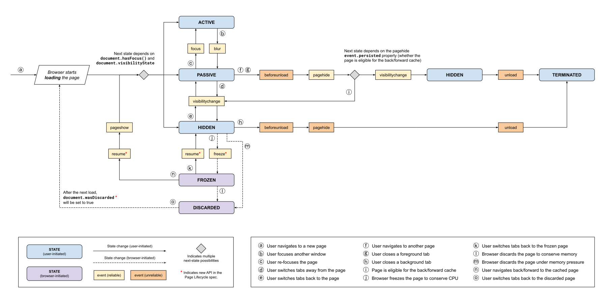

Browser Page Lifecycle

上圖摘自： [Page Lifecycle API](https://developer.chrome.com/blog/page-lifecycle-api/#overview-of-page-lifecycle-states-and-events)
緣由
前陣子遇到一個平常很常遇到，但是真的發生在自己的應用上卻不知如何解決的現象: Frozen state 。因為遇到的狀況很特別，
思路
當下猜測是因為 shallow routing 在往下一個 route path 的時候，沒有清除前一個頁面的 form state 所導致。在找到 Page Lifecycle API 這篇文章之前，曾到 Google 搜尋 clear form state, reset form state 諸如此類的關鍵字，都找不到解決方式。直到我退一步想，若不能清除 form state ，那就乾脆清除 page state。因此，就找到上面這篇文章。
在看了文章的狀態圖和 States 之後，在心中篤信是 shallow routing 造成。索性就用 window.location.href 來取代 $router.push() 。
結果：成功
後續
若仔細看文章後半部的 Testing your app in the frozen and discarded states ，就可以看到有查到 Page state 的 chrome 內建頁面 chrome://discards/ 。下次若再遇到的話，再來試試看。